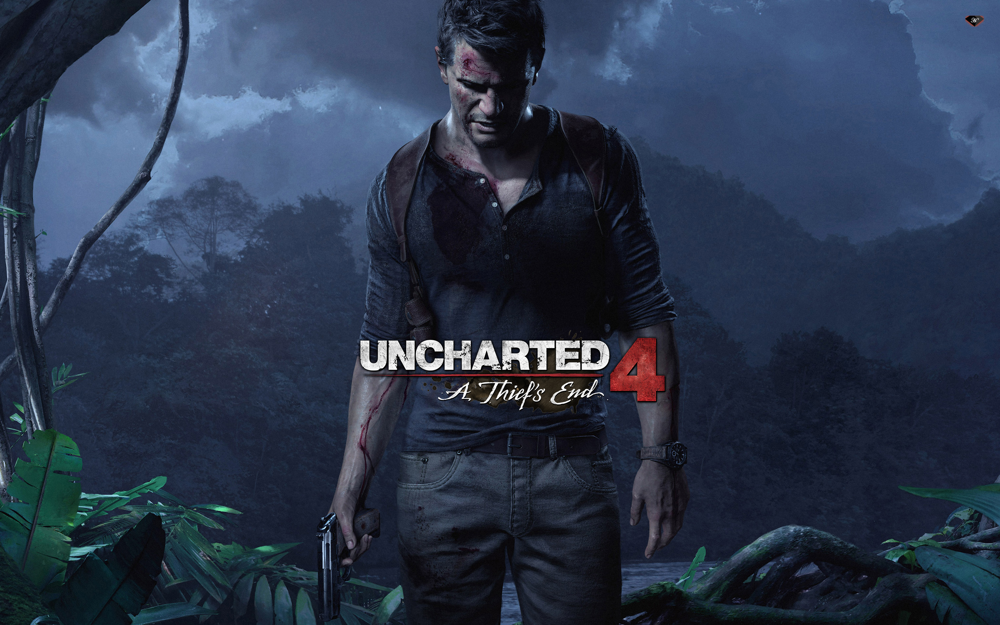
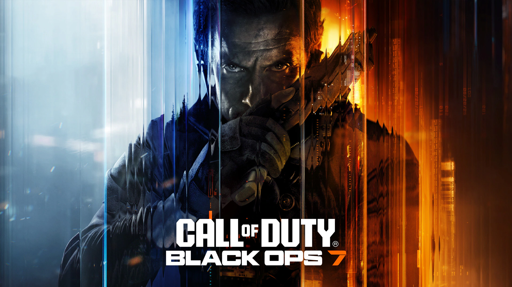
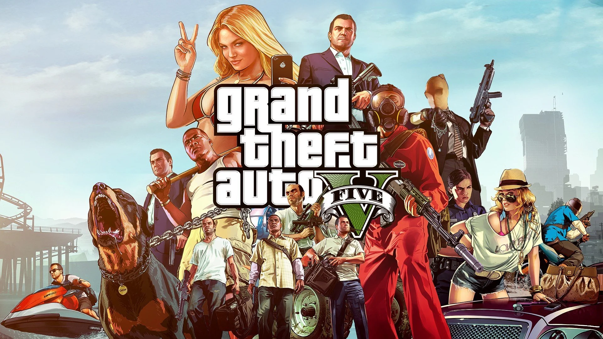
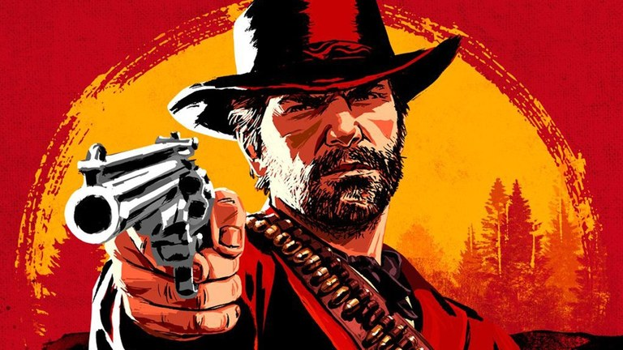
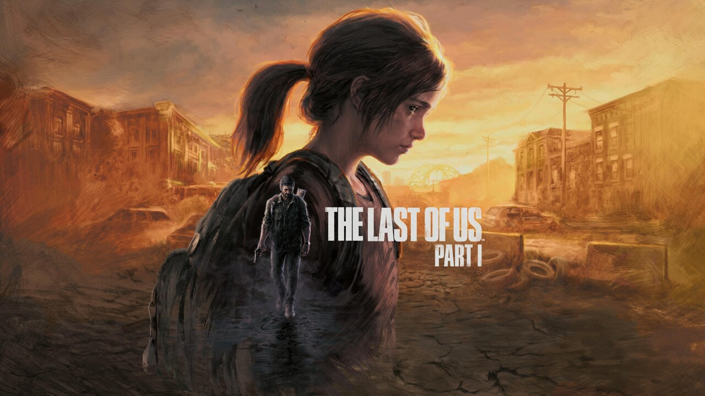
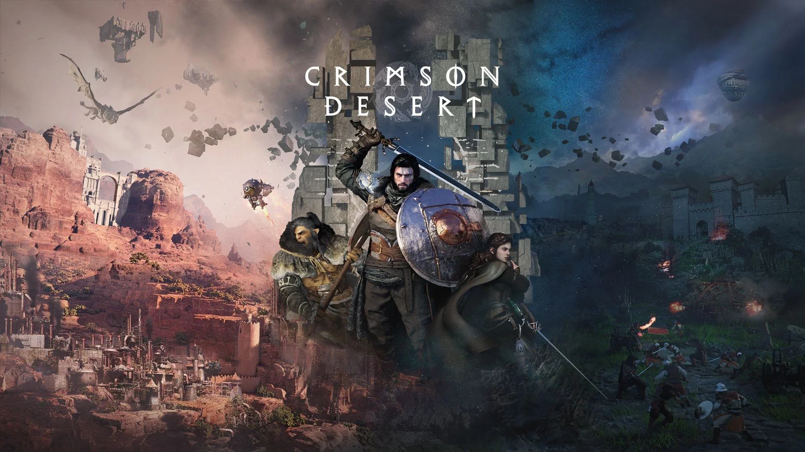

Unchardet 4
Uncharted 4: A Thief's End é um jogo de ação e aventura desenvolvido pela Naughty Dog e publicado pela Sony Computer Entertainment. É o quarto jogo principal da série e foi lançado exclusivamente para PlayStation 4 em 10 de maio de 2016.

Call of Duty
Call of Duty é uma franquia de jogos de tiro em primeira pessoa publicada pela Activision. O primeiro jogo da série foi lançado em 2003, desenvolvido pela Infinity Ward, inicialmente para computadores.

God of War
God of War Ragnarök é um jogo de ação e aventura desenvolvido pela Santa Monica Studio e publicado pela Sony Interactive Entertainment. Foi lançado em 9 de novembro de 2022 para PlayStation 4 e PlayStation 5.

Grand Theft Auto
Grand Theft Auto V é um jogo eletrônico de ação e aventura desenvolvido pela Rockstar North e publicado pela Rockstar Games em 17 de Setembro de 2013. O jogo da Rockstar Games quebrou recordes, arrecadando US$ 1 bilhão em apenas três dias.

Minecraft
Minecraft é um jogo de sobrevivência em estilo sandbox lançado em 2011 pela desenvolvedora Mojang Studios. Foi criado por Markus Persson, conhecido como “Notch”, e teve sua primeira versão alfa pública lançada em 17 de maio de 2009.

Red Dead Redemption 2
Red Dead Redemption 2 é um jogo de ação em mundo aberto lançado em 2018 pela Rockstar Games. A história acompanha Arthur Morgan, um fora da lei no Velho Oeste, e é destaque pelo realismo e pela narrativa envolvente.

The Last of Us 1
The Last of Us é um jogo de ação e sobrevivência lançado em 2013 pela Naughty Dog. A história mostra Joel e Ellie tentando sobreviver em um mundo pós-apocalíptico, com foco na relação entre os dois.

The Last of Us 2
The Last of Us Part II é um jogo de ação e sobrevivência lançado em 2020 pela Naughty Dog. A história acompanha Ellie anos após o primeiro jogo, em uma jornada marcada por vingança, conflitos e fortes emoções em um mundo pós-apocalíptico.

Spider-Man 2
Marvel's Spider-Man 2 é um jogo de ação e aventura lançado em 2023 pela Insomniac Games. A história acompanha Peter Parker e Miles Morales enfrentando novos vilões em Nova York, com foco em combate dinâmico e narrativa envolvente.

EA Sports FC 2026
EA Sports FC 26 é um jogo de futebol da EA Sports. Ele traz times, jogadores e competições atualizadas, além de modos como carreira e Ultimate Team, com gráficos realistas e jogabilidade aprimorada.

Crimson Desert
Crimson Desert é um jogo de ação e RPG em mundo aberto desenvolvido pela Pearl Abyss. A história se passa em um mundo de fantasia medieval e acompanha mercenários em meio a guerras e conflitos, com foco em combates intensos e gráficos realistas.

Elden Ring
Elden Ring é um RPG de ação lançado em 2022, desenvolvido pela FromSoftware. O jogo se passa em um vasto mundo de fantasia sombria, com exploração livre, chefes desafiadores e combates intensos.